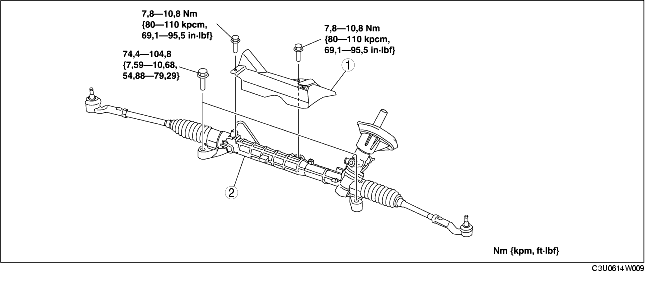

DEMONTERING/MONTERING AV STYRVÄXEL OCH LÄNKSYSTEM
B3E061432960W01
-
Försiktigt
-
• Om följande procedur utförs utan att först demontera ABS-hjulhastighetsgivaren kan det uppstå avbrott i kablaget om du drar i givaren av misstag. Innan du utför följande procedurer, koppla ur ABS-hjulhastighetsgivarens kablage (kontakt på axelsidan) och fixera kablaget på lämpligt sätt så att det inte går att dra i det av misstag under fordonsservice.
1. Demontera tvärbalk fram, undre bärarm, krängningshämmare fram, styrväxel och länkarm som en enhet. (Se DEMONTERING/MONTERING AV TVÄRBALK FRAM.)
2. Demontera i den ordning som anges i tabellen.
3. Montera i omvänd ordning mot demonteringen.
4. Kontrollera hjulinställningen och justera vid behov efter monteringen. (Se HJULINSTÄLLNING FRAM.)

.
|
1
|
Isolering
|
|
2
|
Styrväxel och länksystem
|